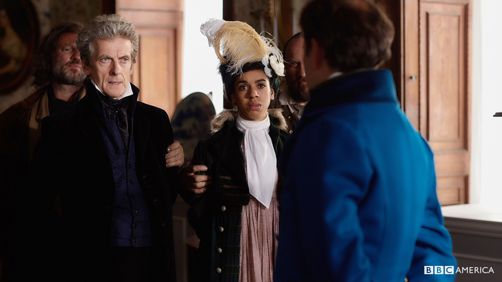
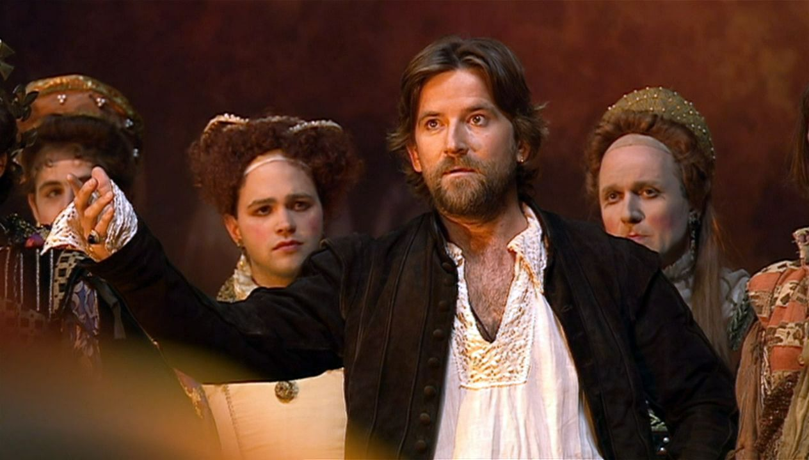
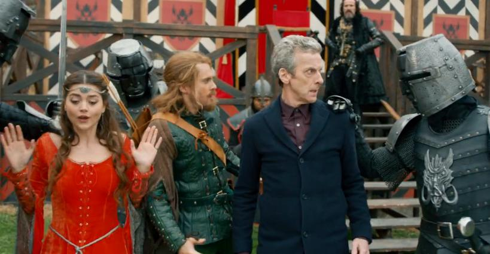
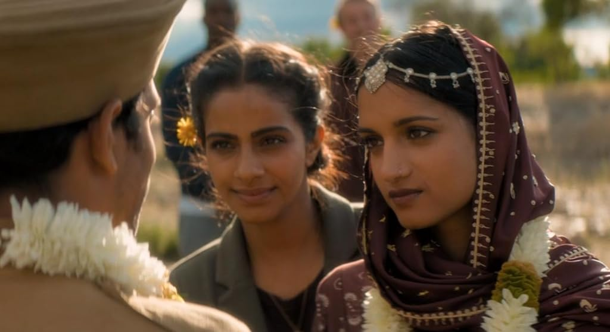
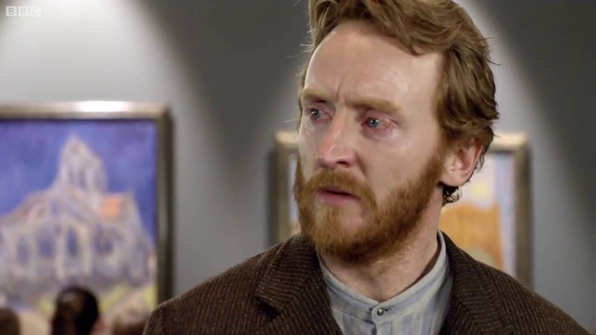

.png)
Neste episódio, Clara viaja para um sistema solar distante e testemunha uma cerimônia única. O Doutor compartilha a ideia de que as histórias são a melhor coisa que temos, destacando a importância das narrativas na transmissão de conhecimento e valores. Uma celebração da diversidade de culturas e crenças.
Lado a lado com a educação e desenvolvimento humano
"Doctor Who" não é apenas uma série de ficção científica; é uma lição de vida que transcende as barreiras do tempo e do espaço. No entanto, por trás dos alienígenas, das aventuras intergalácticas e das reviravoltas temporais, a série oferece uma perspectiva única sobre educação de qualidade. Ao longo das suas diversas regenerações do Doutor, a série destaca a importância do conhecimento, do aprendizado contínuo e da compreensão intercultural. Em muitos episódios, "Doctor Who" se transforma em uma sala de aula onde personagens e espectadores exploram conceitos profundos que vão além de apenas ciência e da fantasia. Então montamos um conograma de visão geral essses episodeos que transpiram mudanças. vamos mergulhar em alguns desses episódios com um top 5 episodeos que não apenas entretêm, mas também inspiram e ensinam.The Rings of Akhaten" (2013) - 7ª Temporada:

The Shakespeare Code" (2007) - 3ª Temporada:

Enquanto visita o icônico William Shakespeare, o Doutor se envolve em uma trama que envolve bruxaria e palavras proibidas. Além de ser um episódio emocionante, destaca a importância das palavras e da linguagem como ferramentas poderosas. Um convite para explorar a riqueza da literatura e seu impacto cultural
Robot of Sherwood (2014) - 12ª Temporada

Neste episódio, o Doutor questiona a realidade ao encontrar Robin Hood na Inglaterra medieval. A trama brinca com as lendas e mitos, oferecendo uma visão divertida e irônica. Uma abordagem única para explorar como histórias e personagens se tornam parte do folclore cultural.
"Demons of the Punjab" (2018) - 11ª Temporada::

Ao viajar para o passado de uma de suas companheiras, o Doutor confronta eventos dolorosos da história. O episódio oferece uma perspectiva única sobre a complexidade das relações humanas e os impactos das decisões históricas. Uma lição sobre empatia e compreensão cultural.
"Vincent and the Doctor" (2010) - 11ª Temporada: :

Este episódio comovente nos leva a Paris, onde o Doutor e sua companheira Amy encontram o lendário pintor Vincent van Gogh. Além da trama envolvente, o episódio aborda questões sérias de saúde mental, utilizando a arte como uma forma de expressão e compreensão do mundo. Uma jornada tocante pela vida e obra do mestre da pintura.